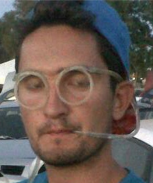
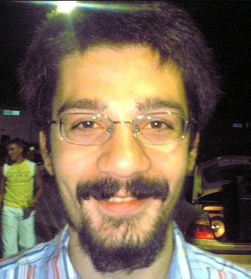
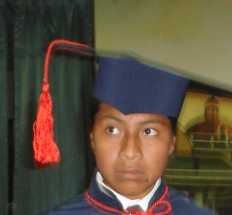

El objetivo de Mupos consiste en que toda persona pueda encontrar cualquier rincón que pertenezca a la Universidad Pablo de Olavide, de Sevilla.
|  | Manuel Benítez Sánchez. Grado Superior en Administración de Sistemas Informáticos y estudiante de Ingeniería |
|  | Francisco López Baena. Grado Superior en Administración de Sistemas Informáticos, Grado Superior de Desarrollo de Aplicaciones Informáticas y estudiante de Ingeniería |
|  | Edwin Mauricio Quishpe Maldonado. Grado Superior de Desarrollo de Aplicaciones Informáticas y estudiante de Ingeniería |
 Mupos
Mupos